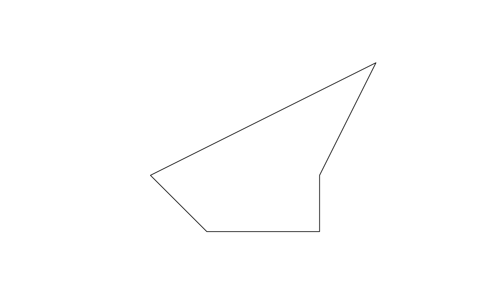

Calculate the 'desplim' compactness of an sf POLYGON object
desplim_compactness.RdBased on the approach described in Kaufmann et al. (2018), this
function computes the compactness of an sf POLYGON object.
Details
Please see the dedicated vignette for information about the
compactness metric. If input contains geometries of type MULTIPOLYGON, they
are cast to POLYGON before computing.
Examples
# Create simple plygon
polygon_coords <- list(matrix(
c(0, 0, 0, 1, 1, 3, -1, 2, -3, 1, -2, 0, 0, 0),
ncol = 2,
byrow = TRUE
))
simple_polygon <- sf::st_sfc(sf::st_polygon(polygon_coords), crs = 4326)
input_sf <- sf::st_sf(geometry = simple_polygon)
# Calculate compactness
compactness_result <- desplim_compactness(input_sf, keep_metrics = TRUE)
plot(input_sf)

print(sf::st_drop_geometry(compactness_result))
#> boyce box_reock hull len_wid polsby reock schwartz
#> 1 0.8264538 0.5499207 0.9165904 0.7503429 0.5586596 0.3524037 0.7474354
#> skew sym_x sym_y compactness
#> 1 0.4282874 0.649081 0.6360927 0.7664453